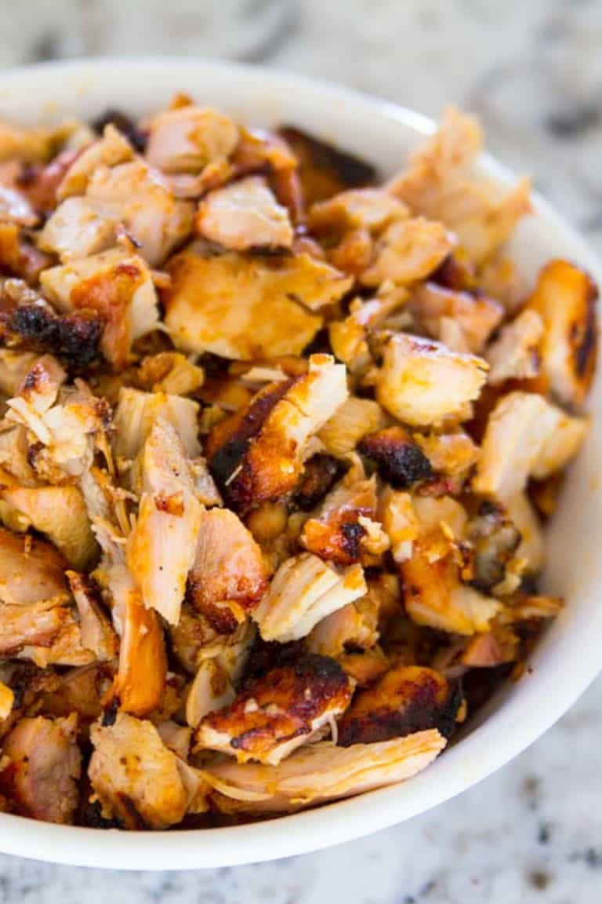

Chicken Adobo

Description
This is a delicious way to prepare chicken thighs, using a blend of chipotle peppers in adobo, dried ancho chiles and other ingredients to create a marinade. A family favorite!
Ingredients
- 2 lbs boneless skinless chicken thighs
- Marinade
- 1/2 cup orange juice
- 4 tbs soy sauce
- 2 tbs lime juice (one medium lime)
- 8 cloves garlic
- 2 tsp ground cumin
- 1 tsp black pepper
- 1 tsp onion powder
- 3 dried ancho chiles
- cover chiles with moist paper towels
- microwave for one minute
- stem and de-seed anchos, and chop into rough pieces
- 20g (1 tbs + 1 tsp) honey
- 8 wheat or corn tortillas
- Condiments
- Mexican cheese
- Salsa
- Guacamole or Avocado
- Spanish rice
Steps
- Mix all marinade ingredients in blender
- Place chicken thighs into large bowl
- Pour marinade over chicken and mix to cover
- Marinate chicken in refrigerator for at least 1 hour
- Air-fry chicken thighs in air-fryer for 15 minutes at 390°F, turning halfway
- Remove chicken from air-fryer and dice on cutting board
- Warm tortillas wrapped in foil in oven for 10 minutes at 300°F;
- Add chicken, rice, condiments to tortilla and enjoy!